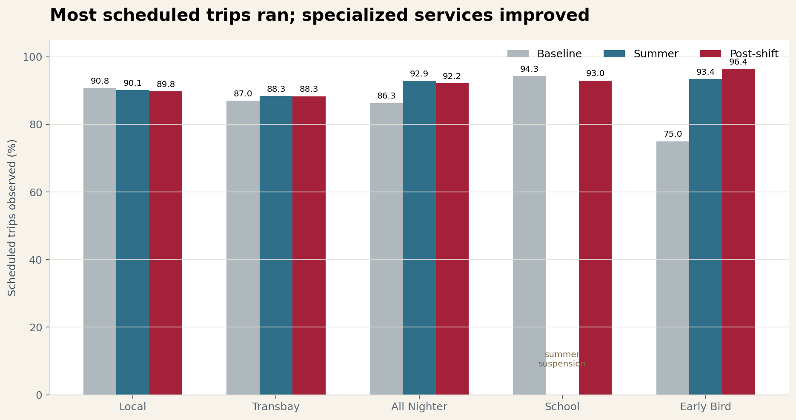
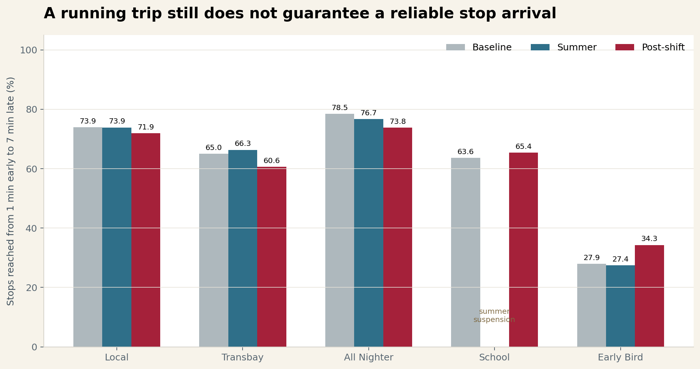
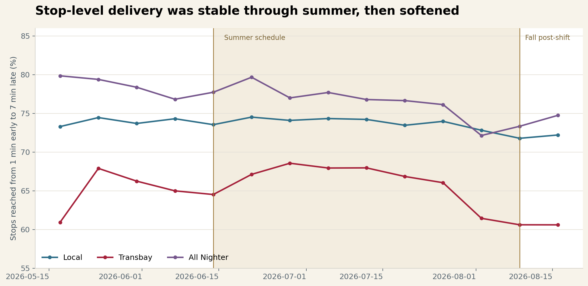
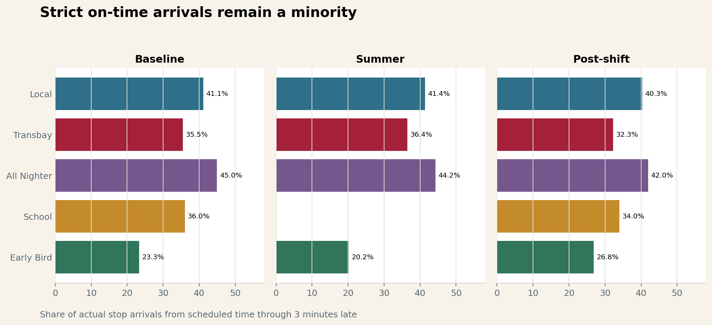
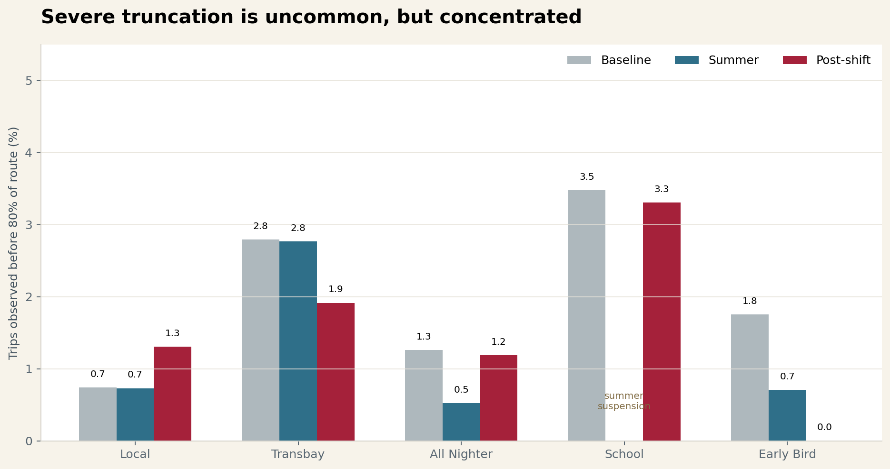
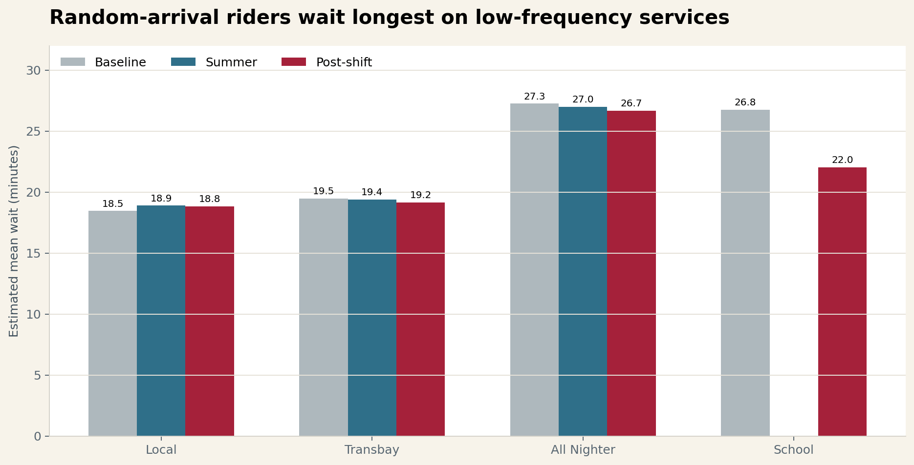
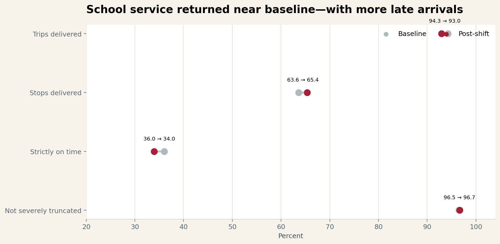
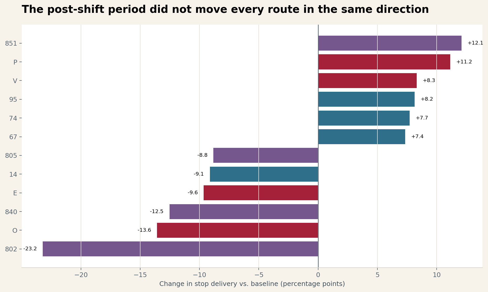
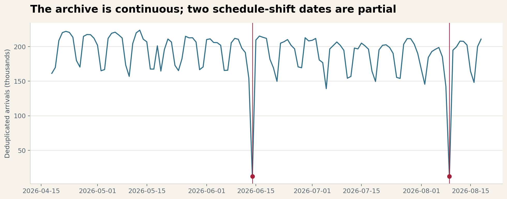
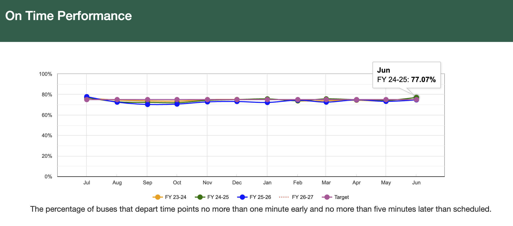

S1000251 archivedFeed coverage: Apr 5–Jun 13
Baseline schedule. Two later April captures were byte-for-byte identical.
Independent analysis · August 19, 2026
I wanted to see whether the buses that appeared in the data also reached their stops at times riders could actually use. Through summer 2026, most scheduled trips showed up somewhere. The stop-level story is less reassuring.
Schedule-shift dates are data gaps
A schedule-shift date is the first service date covered by a new GTFS version. On June 14 and August 9, the prior feed had expired the day before, while this tracker did not archive the newly effective feed until 10:00 p.m. PT. Each date therefore contains only the final hours of tracked service and produces an artificial trip-delivery result—7.1% on June 14 and 6.2% on August 9. Both dates are excluded. Post-shift in this report means the nine complete days after the fall change, August 10–18.
Baseline schedule. Two later April captures were byte-for-byte identical.
Summer schedule and route files arrived after nearly all of the first covered day had passed.
Only fare tables changed; schedule, route, trip, and stop files were unchanged.
Fall schedule and school service returned after nearly all of the first covered day had passed.
Archive timestamps show when this tracker picked up each feed; they do not establish when AC Transit first published it.
The rider experience
At least one actual stop arrival was logged for 90.2% of 433,746 scheduled trips. That sounds solid. But only 73.4% of the scheduled stops on those trips had an arrival from one minute early through seven minutes late. The first number tells us a bus showed up somewhere; the second gets closer to whether a rider could use it.
For a rider, a trip is useful only if it reaches their stop close enough to schedule that they can plan around it. After years of frequency cuts, a missed or no-show bus carries a larger penalty: it can mean being late to work, missing an appointment, or losing a connection with no good backup.
I expected the summer schedule to show a clear systemwide drop. It did not. Local and Transbay performance was broadly stable through the summer. The first complete days after the August schedule shift are where the numbers begin to separate.
Local stop delivery was 73.9% both before and during summer. Transbay improved from 65.0% to 66.3%, while strict on-time performance rose slightly in both groups.
Across the system, stop delivery fell from 73.6% in the baseline to 71.5% after the fall schedule shift. Transbay fell 4.4 points and All Nighter fell 4.7 points, even though a larger share of their scheduled trips ran.
School-route trip delivery returned near baseline: 93.0% versus 94.3%. Stop delivery improved, but strict on-time arrivals slipped to 34.0% and arrivals over seven minutes late rose to 14.4%.
I call this trip delivery: the share of scheduled trips that produced at least one actual stop arrival. It is a deliberately low bar. Across the full study, 90.2% of 433,746 scheduled trips cleared it.

| Route family | Baseline | Summer | Post-shift | Post-shift vs. baseline |
|---|---|---|---|---|
| Local / other | 90.8% | 90.1% | 89.8% | −1.0 pt |
| Transbay | 87.0% | 88.3% | 88.3% | +1.3 pts |
| All Nighter | 86.3% | 92.9% | 92.2% | +5.9 pts |
| School 600–699 | 94.3% | Suspended | 93.0% | −1.3 pts |
| Early Bird 7xx | 75.0% | 93.4% | 96.4% | +21.4 pts |
This does not mean 90.2% of trips finished their full routes. A trip counts as observed after one arrival. That makes trip delivery useful as a basic deployment check, but a poor standalone measure of rider reliability. A bus can clear this bar and still miss downstream stops, arrive far outside the useful window, or end early.
For stop delivery, I count an arrival only when it lands from one minute early through seven minutes late. The denominator includes every scheduled stop on an observed trip, including downstream stops the bus never reached.

This gap between trips and stops is the main result. After the fall shift, All Nighter trip delivery improved by 5.9 points while stop delivery fell by 4.7 points. Transbay moved in the same direction: more scheduled trips appeared in the data, but fewer scheduled stops were reached inside the useful window.
Summer performance
The eight-week summer window was less dramatic than I expected. Local stop delivery stayed at 73.9%. Transbay moved from 65.0% to 66.3%. Strict on-time performance also edged up in both groups. In other words, the data does not show a broad summer decline.

That needs an important qualifier: stable does not mean good. A 73.9% useful-stop result still leaves roughly one scheduled stop in four outside the window. Summer simply did not make that existing problem much worse at the system level.
After the fall schedule shift
The first nine complete days after the fall schedule shift look different. Systemwide stop delivery fell to 71.5%. Transbay fell 4.4 points from baseline and All Nighter fell 4.7 points, even as trip delivery improved for both groups. That divergence is worth watching.
My stricter on-time measure counts an arrival only from its scheduled time through three minutes late. An early bus is not “on time” here: for someone timing a walk to the stop, leaving early can be just as disruptive as arriving late.

| Route family | Baseline on time | Summer on time | Post-shift on time | Post-shift >7 min late |
|---|---|---|---|---|
| Local / other | 41.1% | 41.4% | 40.3% | 12.3% |
| Transbay | 35.5% | 36.4% | 32.3% | 15.7% |
| All Nighter | 45.0% | 44.2% | 42.0% | 11.6% |
| School 600–699 | 36.0% | — | 34.0% | 14.4% |
| Early Bird 7xx | 23.3% | 20.2% | 26.8% | 14.6% |
Severely truncated trips are uncommon in these windows. The more persistent cost is time: post-shift waits averaged 18.8 minutes on Local service, 19.2 minutes on Transbay service, and 26.7 minutes on All Nighter service. I use an 80% threshold for severe truncation because a bus can appear to miss its last stop when the final GPS point falls just short of the terminal.


Those waits changed little across the three windows. So the post-shift signal is mainly about stop delivery and punctuality, not a sudden systemwide collapse in headways. The waiting burden was already there.
School service
School routes make a useful check because AC Transit suspended lines 600–699 for summer and brought them back on August 9. Across seven complete post-shift school-service days, trip delivery and severe truncation returned close to their pre-summer levels. Punctuality did not.

Trip delivery was 93.0%, versus 94.3% before summer. Stop delivery improved from 63.6% to 65.4%. The tradeoff shows up in timing: on-time arrivals fell two points, while the share more than seven minutes late rose 3.7 points. Severe truncation was nearly unchanged at 3.3%, versus 3.5% before summer.
School routes do not all operate on every weekday. The comparison uses only service that appears in each date’s GTFS schedule; it does not assume every 600-series route should run daily.
| Post-shift family | Scheduled trips | Trips observed | Trip delivery | Stop delivery | Strictly on time |
|---|---|---|---|---|---|
| All Nighter | 730 | 673 | 92.2% | 73.8% | 42.0% |
| Early Bird | 28 | 27 | 96.4% | 34.3% | 26.8% |
Early Bird’s trip-delivery result improved sharply, but I would not draw much from its stop numbers yet. The post-shift sample contains only 70 scheduled stop rows and 41 actual arrivals. These short routes cross the service-day boundary and often finalize through the tracker’s stale-trip path, so I treat their stop and headway results mainly as a data-quality check.
Route-by-route results
Riders do not experience a system average; they experience a particular route. To keep very small samples from dominating, I limited this comparison to routes with at least 100 observed baseline trips and 50 post-shift trips. Within that group, Lines 802, O, and 840 had the largest stop-delivery declines. Lines 851, P, and V had some of the largest gains.

| Route | Family | Baseline stop delivery | Post-shift stop delivery | Change |
|---|---|---|---|---|
| 802 · San Pablo All Nighter | All Nighter | 87.5% | 64.3% | −23.2 pts |
| O · Santa Clara–Encinal | Transbay | 65.2% | 51.6% | −13.6 pts |
| 840 · Foothill–Eastmont | All Nighter | 91.2% | 78.7% | −12.5 pts |
| 851 · Santa Clara–Broadway | All Nighter | 69.1% | 81.2% | +12.1 pts |
| P · Piedmont–Oakland Ave. | Transbay | 45.6% | 56.7% | +11.2 pts |
| V · Montclair–Park Blvd. | Transbay | 37.3% | 45.6% | +8.3 pts |
Data hygiene
The archive has an entry for every day from April 18 through August 18, but the GTFS coverage has two holes. On June 14, the old feed had expired and the new one did not reach this tracker until 10:00 p.m. The same thing happened on August 9. In a chart, those dates look like catastrophic service failures. They are actually partial days in the data, so I exclude both from every comparison.

The live tracker can finalize the same trip more than once. Before calculating anything, I keep one row per service date, trip, and stop, preferring a row with an actual arrival and then the latest ingestion. Otherwise, repeatedly finalized trips would count more than once and skew the results.
Conclusion and call to action
AC Transit describes its on-time performance KPI as: “The percentage of buses that depart time points no more than one minute early and no more than five minutes later than scheduled.” Its public chart sets the target at 75%.
Link directly to this conclusion
That KPI and mine are not identical: AC Transit measures departures at designated time points, while I measure arrivals at every scheduled stop. This report also shows a strict 0/+3-minute measure, but its main stop-delivery window is −1/+7—two minutes more forgiving on the late side than AC Transit’s own window.
At the target, one in four measured timepoint departures can fall outside AC Transit’s own window. A single percentage does not tell us whether those misses were six minutes late, thirty minutes late, or trips that never ran. That is exactly the failure range this analysis is trying to make visible.
Keep a simple on-time percentage as the headline if it is useful, but pair it with a service-delivery target and limits on the worst outcomes. I would start with the following public commitments:
A dropped trip or timepoint cannot disappear from the on-time calculation just because there is no departure to measure. Every scheduled trip should remain in the denominator, fail the headline on-time KPI, fail the 100% service-delivery target, and count as a catastrophic tail failure. If no-shows are excluded from the p95 and p99 calculations, those percentiles should be published alongside a separate no-show rate that automatically fails the standard.
This matters because AC Transit is not starting from a high-frequency network with abundant backup options. Much of the planned service is already skeletal. When the next bus may be twenty, thirty, or sixty minutes away, a trip that does not run is not a small scheduling miss—it can break the rider’s entire journey. In that context, 100% service delivery is the right target, and a p99 worse than ten minutes late should be treated as a serious failure.
Trip delivery is a useful starting point, but it should never stand on its own. The scorecard should also show whether trips reached their scheduled stops, how early or late they were, whether they completed most of the route, and how uneven spacing changed the wait.
I would publish each measure by service family and route, not only as a systemwide average. This summer is a good example of why: the overall numbers barely moved while stop-level performance remained weak, and the post-shift average hid routes moving sharply in opposite directions.
Methodology & sources
feed_info.txt coverage dates.